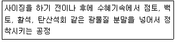
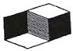
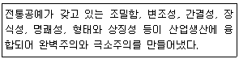
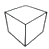

시각디자인산업기사 (2019-04-27 기출문제)
1과목: 색채학
1. 먼셀 표색계의 10색상환에서 명도가 가장 낮은 색은?
- 주황
- 파랑
- 연두
- 노랑
(정답률: 83%)

2. 색채조화론에 대한 설명으로 옳은 것은?
- 영, 헬름홀츠는 4원색설을 주장하였다.
- 저드의 색채조화론은 먼셀의 조화론에서 영향을 받았다.
- 헤링은 3원색설을 주장하였다.
- 슈브뢸 4가지 조화의 법칙을 발표하였다.
(정답률: 36%)
3. 디지털 색채 체계의 유형에 대한 설명으로 틀린 것은?
- HSV색공간은 실제 페인트 혼합에 근거를 둔 색교정이 쉬운 인터페이스를 제공한다.
- RGB 데이터를 CMYK로 변환하는 과정에서 색상이 손실되지 않는다.
- RGB 형식은 빨강(Red), 초록(Green), 파랑(Blue)을 혼합하여 우리가 볼 수 있는 모든 컬러를 재현하는 것이다.
- CMYK 형식은 표현할 수 있는 컬러의 범위가 RGB보다 좁다.
(정답률: 77%)
4. 고흐, 쇠라, 시냑 등 인상파 화가들의 표현기법과 관계 깊은 것은?
- 계시대비
- 경영색
- 회전혼합
- 병치혼합
(정답률: 80%)
5. 국제표준화기구(ISO)에서 제정하는 안전표지의 의미와 배치에 대한 설명으로 옳은 것은?
- 노랑과 검정 대비색 – 강제적인 지시
- 빨강과 하양 대비색 – 잠재적 위험 경고
- 파랑과 하양 대비색 – 출입 금지
- 초록과 하양 대비색 – 안전한 상태
(정답률: 63%)
6. 다음 중 먼셀 색입체의 수직단면도 상에서 가장 윗부분에 위치하는 것은?
- 7.5R 4/6
- 5YR 5/10
- 10P 9/2
- 2.5GY 2/1
(정답률: 57%)
7. 4원색 제판을 통한 4도 인쇄는 색의 어떤 원리를 이용한 것인가?
- 이화작용
- 감법혼색
- 연속대비
- 보색대비
(정답률: 79%)
8. 태양 광선이 프리즘을 통하면 스펙트럼이 형성된다는 것을 처음으로 발표한 사람은?
- 헤링
- 헬름홀츠
- 뉴튼
- 토마스 영
(정답률: 78%)
9. 감법혼색에 관한 내용 중 옳은 것은?
- 자주 + 노랑 = 회색
- 파랑 + 자주 = 녹색
- 혼색하면 명도는 증가한다.
- 감법혼색의 3원색은 가법혼색의 2차색이다.
(정답률: 73%)
10. 문ㆍ스펜서의 조화론에 대한 설명으로 틀린 것은?
- 조화의 범위를 동일, 유사, 대비로 한다.
- 부조화의 범위를 제1 부조화, 제2 부조화, 눈부심으로 한다.
- 감성적인 조화론을 과학적, 정량적으로 취급한다.
- 부조화의 원인 중 주의할 것은 채도 차의 애매함이다.
(정답률: 60%)
11. 먼셀 표색계의 특징에 관한 설명 중 틀린 것은?
- 색상을 Hue, 명도를 Value, 채도를 Chroma라고 한다.
- 그레이스케일에서 N9.5는 흰색이다.
- R과 Y의 중간색상은 0로 표시한다.
- 노랑의 순색은 5Y 8/14이다.
(정답률: 74%)
12. 색채의 시인성에 가장 영향력이 큰 것은?
- 배경색과 대상색의 색상차가 중요하다.
- 배경색과 대상색의 명도차가 중요하다.
- 노랑색과 흰색을 배색하면 명도차가 커서 시인성이 높아진다.
- 배경색과 대상색의 색상차이는 크게 하고, 명도차는 두지 않아도 된다.
(정답률: 64%)
13. 먼셀의 색채조화론의 원리에 대한 설명으로 틀린 것은?
- 먼셀 색입체의 수직단면에서 명도 및 채도에 관하여 정연한 간격으로 했을 때 조화롭다.
- 명도는 같으나 채도가 다른 반대색끼리는 약한 채도에 큰 넓이를 주고, 강한 채도에 작은 면적을 주면 조화롭다.
- 중심점으로서 N9에 근거한 조화가 바람직하다.
- 회색척도에 준하여 정연한 간격으로 배색하면 조화롭다.
(정답률: 66%)
14. PNG 포맷에 관한 설명으로 옳지 않은 것은?
- 24비트 색상표현도 가능하다.
- GIF와 같이 배경을 투명하게 만들 수 있다.
- JPG 파일에 비해 다른 파일 포맷으로 변환시 이미지 퀄리티의 손상이 크다.
- JPG 파일과 GIF 파일의 장점을 합쳐놓은 그래픽 파일 포맷이다.
(정답률: 72%)
15. 다음 중 가장 무거운 느낌의 색은?
- 명도가 높은 적색
- 명도가 높은 황색
- 중명도의 자색
- 명도가 낮은 청색
(정답률: 82%)
16. 분리배색에 대한 설명으로 틀린 것은?
- 배색 시 색의 관계가 유사하여 애매한 인상을 줄 때, 분리색을 삽입하는 배색을 말한다.
- 슈브뢸의 조화이론을 기본으로 한 배색방법이다.
- 유채색을 분리색으로 사용하는 것이 원칙이다.
- 배색 시 색의 대비가 심하여 애매한 인상을 줄 때, 분리색을 삽입하는 배색을 말한다.
(정답률: 61%)
17. 다음 중 가장 팽창되어 보이는 색은?
- 고명도, 저채도, 한색계의 색
- 저명도, 고채도, 난색계의 색
- 고명도, 고채도, 난색계의 색
- 저명도, 고채도, 한색계의 색
(정답률: 74%)
18. 헤링에 의해 발표된 반대색설의 대응색으로 바르게 짝지어진 것은?
- 빨강 – 파랑
- 파랑 – 녹색
- 빨강 – 녹색
- 노랑 – 녹색
(정답률: 72%)
19. 오스트발트 표색계에 대한 설명으로 틀린 것은?
- 각각의 주파장 중 가장 순도가 높은 색을 그 주파장의 완전색이라 한다.
- 색채시스템의 기본구조는 이상적 백색, 이상적 흑색, 이상적 순색인 완전색 3색으로 구분한다.
- 먼셀의 영향을 받아 색채 시스템을 개발하였다.
- 회전 순색 원판에 의한 순색의 색을 표현하였다.
(정답률: 45%)
20. 색채의 연상에 대한 설명으로 틀린 것은?
- 연상의 종류에는 구체적연상과 추상적연상이 있다.
- 특정 집단을 연령, 성별, 직업 등의 공통점으로 묶으면 연상의 내용에도 어떤 공통점이 보인다.
- 색채 연상의 조사방법은 자유연상법과 제한연상법이 있다.
- 고채도색일수록 연상어의 의미가 다양하지 않다.
(정답률: 82%)
2과목: 인쇄 및 사진기법
21. 빛이 어떤 한 매질에서 다른 매질로 입사할 때 그 진행 방향이 달라지는 현상은?
- 회절
- 간섭
- 편광
- 굴절
(정답률: 79%)
22. 카메라를 초점 체계에 따라 분류한 것이 아닌 것은?
- 뷰 카메라
- 반사식 카메라
- 레인지 파인더 카메라
- 포컬플레인 셔터 카메라
(정답률: 55%)
23. 촬영용 렌즈의 앞 또는 뒤에 설치하여 초점거리를 늘려주어 망원효과를 얻을 수 있는 렌즈는?
- 시프트 렌즈(shift lens)
- 마이크로 렌즈(micro lens)
- 컨버젼 렌즈(conversion lens)
- 연 초점 렌즈(soft focus lens)
(정답률: 45%)
24. 감광재료에 빛이 수용될 수 있는 통상적인 범위보다 과노광이 주어지면 정상 밝기 범위의 노광에 의한 최고 농도값 보다 오히려 농도가 지하되어 고농도부가 부분적으로 반전되어 보이는 현상은?
- 이중 인화
- 디포메이션
- 릴리프 포토
- 솔라리제이션
(정답률: 67%)
25. 단추를 누르면 셔터가 열리고, 손을 떼면 닫히도록 설계된 단시간 노출용의 셔터는?
- T 셔터
- B 셔터
- I셔터
- 자동 셔터
(정답률: 55%)
26. 필름의 유제막 안에 분산되어 있는 할로겐화은 입자가 가늘고 고르게 분포되어 있는 정도를 말하는 것은?
- 입상성
- 해상력
- 감광도
- 감색성
(정답률: 45%)
27. MQ 현상액의 약품 조합으로 옳은 것은?
- 메톨+페니돈
- 메톨+세미쿼논
- 하이드로퀴논+메톨
- 하이드로퀴논+페니돈
(정답률: 66%)
28. 문자의 크기 중 1급의 크기를 나타내는 것은?
- 문자 한 변의 길이가 0.1 mm인 정사각형 크기
- 문자 한 변의 길이가 0.25 mm인 정사각형 크기
- 문자 한 변의 길이가 0.33 mm 인 정사각형 크기
- 문자 한 변의 길이가 0.5 mm 인 정사각형 크기
(정답률: 68%)
29. 다음 중 윤곽 얼룩(marginal zone) 현상이 생기는 인쇄방식은?
- 평판
- 공판
- 블록판
- 오목판
(정답률: 53%)
30. 사진 유제가 마찰로 인한 정전기가 발생하여 방전에 의해 현상 시 나무뿌리 모양이나 희미한 원형의 흑화가 발생되는 것은?
- 스풀(spool)
- 무이레(moire)
- 스타트 마크(start mark)
- 스테틱 마크(static mark)
(정답률: 55%)
31. 현상처리가 끝난 필름의 농도를 높이기 위하여 사용하는 방법은?
- 보력
- 감력
- 증감
- 감감
(정답률: 38%)
32. 주광용 컬러필름에 가장 적합한 인공광원은?
- 촛불
- 백열등
- 텅스텐등
- 전자플래시
(정답률: 42%)
33. 다음 중 가장 내쇄력이 좋은 인쇄판은?
- PS판
- 난백판
- 선화판
- 와이프온판
(정답률: 70%)
34. 패닝(panning)에 대한 설명으로 틀린 것은?
- 동체 촬영 방법의 하나로 흘려찍기라고도 한다.
- 동체의 움직임에 맞춰 카메라를 움직이면서 촬영하는 방법이다.
- 운동방향이 각기 다른 피사체의 움직임을 나타내는 데 적절하다.
- 패닝을 할 수 있는 피사체는 카메라에 대해 직각으로 이동하는 것이 좋다.
(정답률: 54%)
35. 인쇄물 표면 코팅의 종류로 볼 수 없는 것은?
- 아교 코팅
- 니스 코팅
- 비닐 코팅
- 왁스 코팅
(정답률: 61%)
36. 상품명이나 제조회사명을 인쇄하여 상품에 붙이는 방식으로, 인쇄 이외에 돋음내기, 따내기, 접합가공, 박찍기(hot stamping)가공 등을 연속으로 하는 구조로 되어 있는 것은?
- 전사 인쇄
- 라벨 인쇄
- 카본 인쇄
- 금속 인쇄
(정답률: 72%)
37. 종이의 시험법 중 잉크나 물에 대한 종이의 침투 저항성을 나타내는 것은?
- 백색도
- 흡유도
- 광택도
- 사이즈도
(정답률: 38%)
38. 컬러사진에서 청색 감광층의 헐레이션을 방지하고 녹색 감광층과 적색 감광층에 청색광이 감광하는 것을 방지하는 층은?
- 중간층
- 보호층
- 황색필터층
- 적감유제층
(정답률: 70%)
39. 인쇄의 4방식 분류에 해당하지 않는 것은?
- 평판인쇄
- 석판인쇄
- 볼록판인쇄
- 오목판인쇄
(정답률: 87%)
40. 다음에서 설명하는 종이의 제조 공정은?

- 고해
- 착색
- 전충
- 초지
(정답률: 42%)
3과목: 시각디자인론
41. 다음 그림에서 느낄 수 있는 착시 효과는?

- 분할의 착시
- 대비의 착시
- 반전실체의 착시
- 수직수평의 착시
(정답률: 62%)
42. 다음은 어느 나라 디자인에 관한 설명인가?

- 중국
- 일본
- 프랑스
- 미국
(정답률: 65%)
43. 인간이 발견한 가장 아름다운 분할이라는 황금분할은?
- 1 : 1.618
- 1 : 1
- 1 : 1.414
- 1 : 1.5
(정답률: 84%)
44. 입체의 내부구조를 나타내기 위하여 그 내부를 볼 수 있도록 평면으로 절단해 그려지는 것은?
- 평면도학
- 입체도학
- 단면도
- 투시도
(정답률: 76%)
45. 조형 양식의 표현 방법 중 반대되는 양상의 연결이 틀린 것은?
- 대칭 - 비대칭
- 단순 - 복잡
- 정적 – 대담
- 단일 – 분열
(정답률: 73%)
46. 타이포그래피에 대한 설명으로 틀린 것은?
- 전달하려는 메시지와 의미의 효과적 표현을 위한 수단이다.
- 활판 인쇄술에서 유래한 말로 커뮤니케이션을 위한 문자 조형의 총칭이다.
- 포토그래피를 달리 표현하는 말이다.
- 좁은 뜻에서는 이미 디자인된 활자를 가지고 디자인하는 것을 의미한다.
(정답률: 81%)
47. 마케팅 믹스의 4가지 요소가 아닌 것은?
- 제품(Product)
- 구매(Purchase)
- 판매가격(Price)
- 판매촉진(Promotion)
(정답률: 63%)
48. 일반적인 디자인의 분류에 속하지 않는 것은?
- 제품디자인(Product Design)
- 시각디자인(Visual Communication Design)
- 환경디자인(Environment Design)
- 안티디자인(Anti Design)
(정답률: 82%)
49. 다음 중 디자인의 과정에 해당되지 않는 것은?
- 욕구과정
- 조형과정
- 재료과정
- 판매과정
(정답률: 62%)
50. 광고메시지를 전달하는 매스미디어(Mass media)에서 주로 4대 매체에 속하지 않는 것은?
- 라디오
- DM(Direct mail)
- 잡지
- 신문
(정답률: 73%)
51. 유각 투시도는 소점이 몇 개인가?
- 1개
- 2개
- 3개
- 4개
(정답률: 54%)
52. 상품개발의 초기 단계에 디자인 관련 정보를 정리한 자료로서 상품 콘셉트, 시장상황, 소비자층, 판매전략, 경쟁제품 분석, 유통경로 등이 포함된 자료를 가리키는 용어는?
- Annual Report
- Work Flow
- Design Brief
- Design Comprehensive
(정답률: 48%)
53. 수정궁(Crystal palace)과 관계있는 박람회는?
- 필라델피아 백년제
- 런던의 만국박람회
- 드레스덴 국제박람회
- 파리 대박람회
(정답률: 65%)
54. 가느다란 선과 추상적인 덩어리 형태와의 균형, 간결하고 순수하고 비대칭적이면서 자유로운 형태가 특징으로 1950년대 재규어, 시트로엥 등의 자동차 디자인에도 적용된 디자인은?
- 아르누보 디자인
- 유겐트스틸 디자인
- 파트너십 디자인
- 유기적 모더니즘 디자인
(정답률: 51%)
55. 다음 중 바우하우스의 기본 이념이 아닌 것은?
- 건축을 중심으로 모든 미술활동을 종합한다.
- 독일공작연맹의 이념을 계승하며 예술적 창작과 공학적인 기술을 통합하게 했다.
- 회화, 조각, 건축이 일체가 되는 종합예술을 창조한다.
- 예술은 각 분야별로 분리되어 고유의 표현영역만을 추구해야 한다.
(정답률: 75%)
56. 그림은 어떤 도법으로 그린 것인가?

- 3점 투시투상
- 정투상
- 표고투상
- 2등각 투상
(정답률: 72%)
57. 다음 중 잘못 연결된 것은?
- 미술공예 운동 – 마셜 포그너 상회
- 아르누보 – 헨리 반데 벨데
- 유겐트스틸 – 독일식 아르누보 운동
- 독일공작연맹 – 리스킨과 빅토르오르티
(정답률: 52%)
58. 형태 인식의 순서가 바르게 나열된 것은?
- 인지 → 지각 → 이미지와 기억
- 지각 → 인지 → 이미지와 기억
- 지각 → 이미지와 기억 → 인지
- 인지 → 이미지와 기억 → 지각
(정답률: 50%)
59. 미국 산업디자인의 발전계기를 설명한 것으로 가장 적절하지 않은 것은?
- 세계 2차 대전 전후 바우하우스의 지도적인 인물들이 미국으로 이주
- 월리엄 모리스의 기계부정 운동에 대한 반전운동
- 1920년대 미국의 대공황과 그로 인한 디자인의 필요성
- 바우하우스의 이념이 미국이라는 광대한 지역에서 꽃을 피우게 됨
(정답률: 56%)
60. 미국의 현대문명을 형성하는 소재로 개발된 대표적인 것은?
- 콘크리트
- 우레탄
- 고무
- 플라스틱
(정답률: 59%)
4과목: 시각디자인실무 이론
61. 활자나 사진식자와 달리 수작업으로 문자를 디자인하는 용어는?
- 포토그래피
- 레이아웃
- 일러스트레이션
- 레터링
(정답률: 81%)
62. 편집디자인에서 조형요소의 시각적 질서와 일관성을 유지시키기 위해 설정하는 구분선은?
- 폴리오
- 세네카
- 레이아웃
- 그리드
(정답률: 74%)
63. 커뮤니케이션 방법 중 논 버벌 커뮤니케이션(Non Verbal Communication)에 해당되는 것은?
- 캐치프레이즈(catchphrasc)
- 픽토그램(pictogram)
- 내레이션(narration)
- 슬로건(slogan)
(정답률: 62%)
64. 어도비 포토샵 필터효과 중 이미지의 입체효과표현에 적합한 포토샵 필터는?
- Sharpen
- Blur
- Emboss
- Noise
(정답률: 83%)
65. 마테팅 전략에서 시장 세분화(Market Segmentation)에 대한 설명으로 옳은 것은?
- 제품을 도입기, 성장기, 성숙기, 쇠퇴기로 세분화하는 작업이다.
- 구매시점에서 소비자의 구매의사결정에 영향을 미치기 위해 기업이 사용하는 다양한 유형의 커뮤니케이션을 말한다.
- 전체 시장을 소비자의 요구조건, 구매반응, 행동분석 등에 따라 공통된 속성을 지닌 시장들로 세분화하는 작업이다.
- 경쟁관계에 있는 기업들의 최대 판매 기회를 측정하는데 활용하는 방법이다.
(정답률: 71%)
66. 일반적으로 알려져 있는 식음료 분야의 광고표현으로 틀린 것은?
- 처음 개발된 제품의 경우에는 상품 그 자체에 의해서보다는 기업의 신뢰도에 선택되는 경우가 대부분이다.
- 미묘한 미각의 문제로 인해 고객은 브랜드를 자주 바꾸려하는 경향이 있다.
- 대체적으로 기업이미지와 브랜드 이미지에 의해 선호되는 경향이 높다.
- 목표고객이 어린이나 청소년일 경우 제품의 맛, 성분보다 제품이 갖고 있는 광고 모델, 캐릭터 등에 의해 판매되는 경향이 높다.
(정답률: 78%)
67. 캘린더를 구성하는 조형요소에 대한 설명으로 옳은 것은?
- 캘린더의 규격은 용지의 크기에 따라 변화되는데, 현재 사용되고 있는 용지의 크기는 국전지, 국반절지 두 종류이다.
- 캘린더를 구성하는 조형적 요소에는 용지, 일러스트레이션, 타이포그래피의 3가지 요소가 있다.
- 캘린더 디자인에서 일러스트레이션은 중요한 요소로서 장식적 기능과 홍보 매체로서의 기능을 한다.
- 조형적 요소로서 타이포그래피의 기능은 일러스트레이션과 조화를 이루되 가독성은 고려치 않아도 무리는 없다.
(정답률: 57%)
68. 소비자를 집단별로 구분하는 시장세분화방법에서 지리적 특성별 세분화에 해당하는 것은?
- 연령, 성별, 직업별
- 지역, 도시크기, 인구밀도
- 개성, 취미, 가치관
- 문화, 종교, 사회계층
(정답률: 80%)
69. 하나의 소스로 만든 그래픽을 여러 명의 디자이너들이 다양한 크기로 확대, 축소하여 작업을 진행하고자할 때 적합한 그래픽 파일 유형은? (단, 이미지의 품질손상이 없어야 한다.)
- 래스터(Raster) 이미지
- 비트맵(Bitmap) 이미지
- 벡터(Vector) 이미지
- 앤티앨리어스(Anti-alias) 이미지
(정답률: 80%)
70. 현대의 일러스트레이션에 대한 설명으로 틀린 것은?
- 작가의 개성은 중요하지 않다.
- 커뮤니케이션이라는 구체적이고 설명적인 목적을 가지고 있다.
- 매체를 통해 대량으로 다수에게 전달되어진다.
- 독자적인 영역을 구축하고 있다.
(정답률: 81%)
71. 현재 사용되는 그래픽 심벌의 모체가 된 것은?
- 아이소타입
- 다이어그램
- 로고타입
- 타이포그래피
(정답률: 48%)
72. 국문이나 한자 서체의 일종으로 가로선이 세로선보다 가늘며 세리프(serif)가 있는 글씨체를 말하며 다른 글자체에 비해 비교적 가독성이 높고 주로 본문용으로 사용되어지는 것은?
- 고딕체
- 명조체
- 그래픽체
- 헤드라인체
(정답률: 75%)
73. 마케팅 활동은 궁극적으로 누구를 목표로 전개되어야 하는가?
- 기업가
- 도, 소매인
- 소비자
- 정부
(정답률: 82%)
74. 다음 중 비트맵(bitmap) 방식과 벡터(vector) 방식을 설명한 것으로 틀린 것은?
- JPEG, GIF, PNG는 비트맵 방식의 파일 포맷이다.
- 벡터 방식은 확대 시 계단식의 굴곡이 생긴다.
- 벡터 방식은 직선과 곡선의 좌표를 이용한 베지어곡선으로 이미지를 구현한다.
- 비트맵 방식은 점(pixel)의 집합으로 이미지가 이루어진다.
(정답률: 73%)
75. 온라인 마케팅에 대한 설명으로 틀린 것은?
- 판매원이 예상구매자의 구매를 설득하기 위한 대면 커뮤니케이션이다.
- 종래의 인쇄 및 방송매체를 이용한 마케팅보다 매우 낮은 비용으로 다량의 정보를 세계 전역으로 보낼 수 있다.
- 웹은 광고, 홍보, 판매촉진, DM 등에 이용할 수 있는 쌍방향 멀티미디어이다.
- 기존의 전통적인 마케팅 매체와는 달리 고객들에게 자세하고 다양한 상품 정보를 제공하고 그들과 상호관계를 유지할 수 있게 해주는 장점이 있다.
(정답률: 76%)
76. 표시물이 전달목적을 위해 형태, 색상, 문자 등을 판별하기 쉽도록 하는 기능은?
- 시대성
- 기억성
- 독창성
- 가시성
(정답률: 80%)
77. 애니메이션 제작 과정의 순서를 맞게 나열한 것은?
- 스토리보드 제작 → 기획 애니메이션 제작 → 효과음향 → 레코딩
- 기획 → 스토리보드 제작 → 애니메이션 제작 → 효과음향 → 레코딩
- 기획 → 스토리보드 제작 → 효과음향 → 애니메이션 제작 → 레코딩
- 스토리보드 제작 → 애니메이션 제작 → 기획 → 효과음향 → 레코딩
(정답률: 76%)
78. 데이터를 읽고 쓸 수 있는 휘발성 메모리로 프로그램을 실행하거나 데이터를 임시로 저장할 수 있는 장치는?
- ROM
- RAM
- Hard Disk
- Blu-ray Disk
(정답률: 69%)
79. 교통광고의 특성을 설명한 내용 중 틀린 것은?
- 소구대상을 지역에 따라 세분화할 수 있기 때문에 상권에 알맞은 광고를 할 수 있다.
- 대중교통 이용 중 접촉하는 광고 매체이므로 구매 행동과의 연결성이 강하다.
- 지역에 따라 여러 가지 교통기관을 연계해서 편성해야 하므로 계획의 조정은 불가능하다.
- 도시의 확장으로 광고에 대한 접촉 시간이 비교적 길기 때문에 높은 주목률을 기대할 수 있다.
(정답률: 62%)
80. 아이디어 발상법 중 하나인 브레인스토밍(Brain Storming)의 설명 중 잘못된 것은?
- 발상의 연쇄적 효과를 노리는 것이다.
- 아이디어가 제시될 때마다 평가한다.
- 질(質)보다 양(量)이 중요하다.
- 다른 사람의 아이디어를 활용한다.
(정답률: 72%)